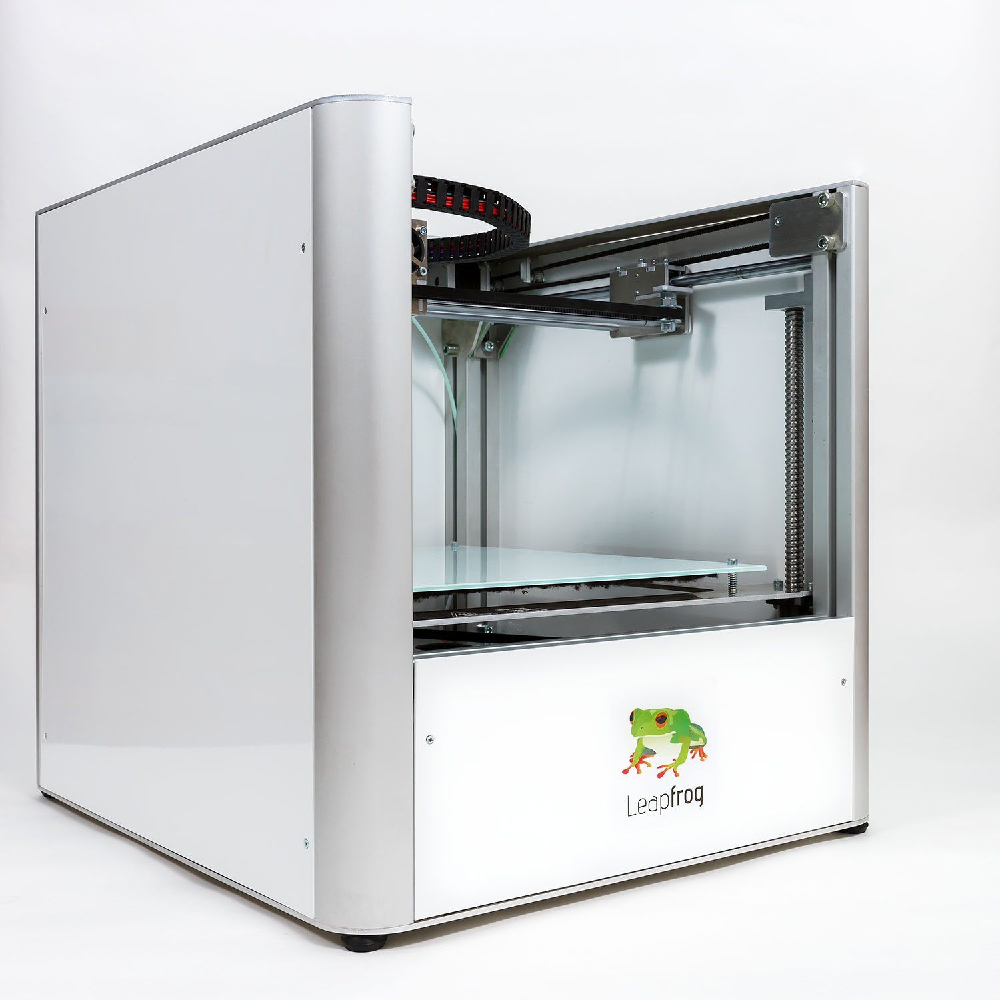
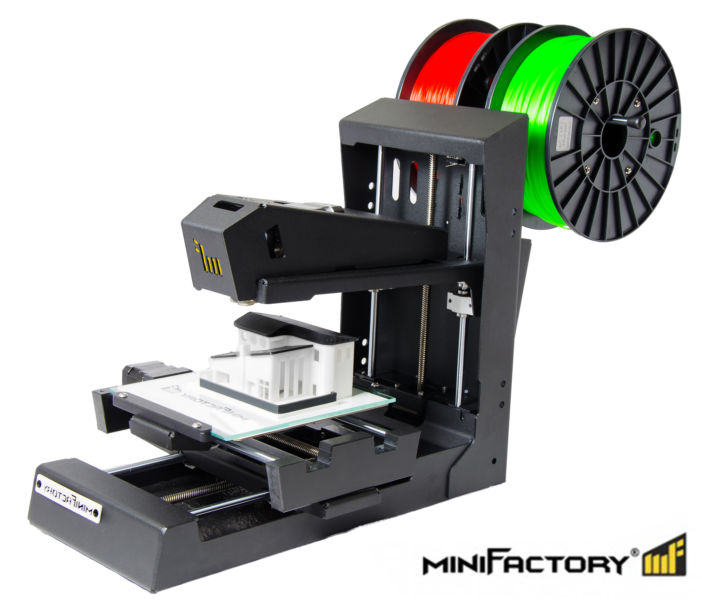

Pääsivu
Materiaalit
Printterit
Linkit ja media


Printterit
3D tulostimet...niitä on paljon. Monia. Mutta loppujen lopuksi sillä ei ole kauheasti väliä. Sulla on varaa vain pariin tai tiedät vaan tuttuja merkkejä ja ostat niitä. Loppuihin sulla ei ole varaa tai et jaksa katsoa niin kaukaa netin syövreistä. Tulostimia on siis oikeesti monia, mutta tässä pari tunnetuinta (ainakin meidän koulussa ja mitä mä tunnen) : - MiniFactory...toimii perfect. flawless... - Leapfrog...absolute fail shit. ei toimi. älä osta. ellei joku korjannu niitä vihdoin. Periaatteessa nää 3D tulostimet törsöää ulos putkestaan sun valmiit 3D tekeleet kun laatat sinne muovia tai mitä materiaalia nyt vaan haluat. (yleensä muovia siis). Tarvitset siis tälläisen kotiin jos haluat tulostaa... Sekä tietokoneen ofc. Nykyään kaikki käy tietokoneilla anyway, joten old ja new generation nyt kauppaan. Kummallakkaan ei ole tietokonetta.
© 2016 Markus Silvola. Kaikki oikeudet on pidätetty ja viety putkaan.